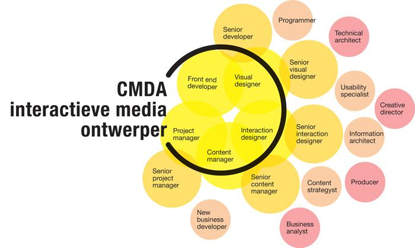

Opleiding
CMD Amsterdam
De opleiding Communication & Multimedia Design (CMD) Amsterdam leert studenten alles over het ontwerpen van online interactieve media. Dit betekent het begrijpen, bedenken en maken van interactieve media zoals websites, mobiele applicaties en interactieve televisie. Bij het ontwerpen van interactieve media staat de mens centraal. Niet alleen als eindgebruiker van een toepassing maar ook in de context van zijn leefomgeving. Studenten doen toegepast onderzoek en leren hun ontwerpen te testen op usability, gebruikersbehoefte en meetbare eindresultaten. Ze leren werken in multidisciplinaire projectteams aan opdrachten voor echte projectpartners.
De vakken gaan over interactie & strategie, -design, - techniek en -cultuur. In de vakken leren studenten te denken en te handelen als een ontwerper. Hiervoor leren ze naast ‘ontwerpen’ ook ‘maken’, ‘onderzoeken’, ‘projectmanagen’ en ‘adviseren’. Studenten kunnen met behulp van keuzevakken, stages en minoren zelf richting geven aan hun opleiding. Na hun afstuderen komen studenten te werken in de creatieve industrie, gericht op de sector ‘nieuwe media’. Het werkveld waarin de interactieve media ontwerper zich begeeft is sterk in ontwikkeling. De opleiding houdt hier met een flexibel curriculum rekening mee en door met (keuze)vakken en projecten in te springen op nieuwe ontwikkelingen.
Ontwerp opleiding voor Interactieve Media
CMD Amsterdam stelt ontwerpen centraal in de opleiding. Zij wil studenten leren te denken als een ontwerper en opleiden tot interactieve media ontwerpers met een goede aansluiting op de huidige én de toekomstige beroepspraktijk.
CMD Amsterdam is een ontwerpopleiding die studenten opleidt om te denken als een ontwerper bij het ontwikkelen van interactieve toepassingen;
CMD Amsterdam gelooft in het 'human centered' ontwerpproces. Wij zien een steeds grotere rol weggelegd voor ontwerpers die in staat zijn om te kijken naar de menselijke kant van interactieve media. In onze visie ontwikkelt de 'human centered' aanpak zich steeds meer naar het bestuderen van de mens in zijn sociale en maatschappelijke context als aanleiding voor en onderbouwing van interactieve media concepten. Daarnaast blijft het belangrijk om te kijken naar de mens op het moment dat hij in aanraking komt met interactieve media, zijn gedrag serieus te nemen en te verwerken in het ontwerpproces. CMDA ziet dan ook een meerwaarde in het inbedden van toegepast onderzoek en prototyping in het curriculum en wil studenten hierin helpen en stimuleren.
Bij CMD Amsterdam staat de mens centraal, niet alleen als eindgebruiker van een ontwikkelde toepassing maar ook als mens met sociaal-maatschappelijke context; Opbouw studieprogramma
CMD Amsterdam heeft een kernprogramma dat alle studenten moeten volgen. De propedeuse is opgebouwd uit 12 kernvakken en 3 projecten. In de jaar 2 en 3 kunnen studenten, naast een kernprogramma, een set profileringsvakken kiezen. Hiermee kunnen ze zich in meer of mindere mate richten op een van de vijf beroepen waar de opleiding voor opleidt.
Studieprogramma
Het studieprogramma is ingedeeld in drie fasen: propedeusefase, hoofdfase en de afstudeerfase. De propedeusefase is voor alle studenten gelijk - je maakt kennis met het brede vakgebied van interactieve media en je werkt dat jaar al aan 3 echte projecten. Het tweede en derde studiejaar is gericht op verdieping in digitaal ontwerp, digitale techniek, online strategie en digitale cultuur. In het afstudeerjaar werk je zelfstandig aan je vaardigheden in een stage bij een bedrijf. In je afstudeerproject laat je zien dat je een toepassing kan bedenken en bouwen voor een groep gebruikers waar je eerst onderzoek naar hebt gedaan. Dit kan uit eigen beweging of bij een bedrijf. Opbouw studieprogramma
Beroepen
Waar leiden we voor op?

Studenten kunnen na deze opleiding aan het werk in een grote diversiteit aan beroepen in het interactieve media werkveld. Tijdens de opleiding kunnen zij zich – naast het generieke kernprogramma – middels de profileringsvakken individueel ontwikkelen. Afgestudeerde studenten komen daarmee in aanmerking voor o.a. de volgende vijf beroepen: Visual Interface Designer, Frontend Developer, Projectmanager, Contentmanager en Interaction Designer. Variaties hierop zijn natuurlijk mogelijk. Mocht je als aankomend student meer willen weten of contact op willen nemen met een afgestudeerde studenten? Neem contact contact met ons op. Uitstroomberoepen: